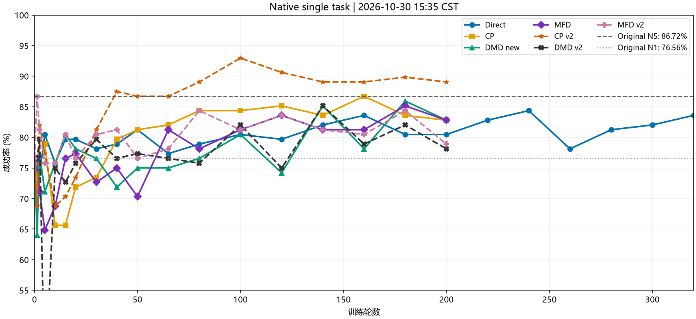
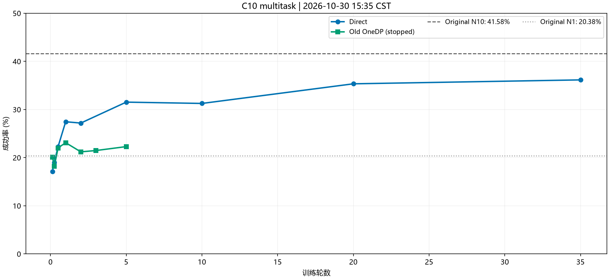
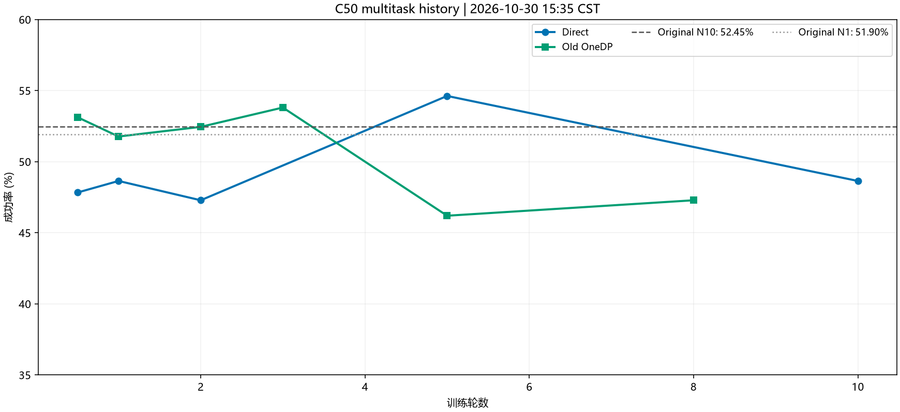

| 卡 | 训练 | 进度 | 剩余含评估 |
|---|---|---|---|
| 4/5 | 多任务 Direct C10 | 55650/55650；末评41/50任务 | 0.5–1.5小时 → RLT |
| 6/7 | 单任务Direct续400 | 3740/4400；340/400轮，评估中 | 1.7–2.5小时 → 后续队列 |
新完成：MFD v2 200轮，末代101/128=78.9%，最佳早期111/128=86.7%。后期未稳定改善。Direct续400最新完整320轮107/128=83.6%，340轮评估进行中，前64回合52成功只作进度，不混入完整曲线。

| 单任务同族 | 最新完整评估 | 最好 |
|---|---|---|
| Direct | 83.6% (107/128) | 84.4% |
| CP | 82.8% (106/128) | 86.7% |
| DMD new | 82.8% (106/128) | 85.9% |
| MFD | 82.8% (106/128) | 85.2% |
| CP v2 | 89.1% (114/128) | 93.0% |
| DMD v2 | 78.1% (100/128) | 85.2% |
| MFD v2 | 78.9% (101/128) | 86.7% |
横轴为训练轮数；原始N5 86.7%、N1 76.6%；FQL失败曲线默认不展示。
Direct已训满50轮，末评已处理41/50任务：37有效、4仿真报错跳过，当前108/296=36.5%为不完整结果，不与历史完整点直接比较。最新完整点仍133/368=36.1%；原始N10为41.6%、N1为20.4%。训练进度不等于新的评估成绩。


| Direct →400轮（当前340轮） | 1.7–2.5 h |
| CP v2 200→400轮 | 5–6.5 h |
| DMD new 200→400轮 | 6–8 h |
| MFD 200→400轮 | 9–11 h |
| FQL-fix →200轮 | 9–12 h |
| 逐卡RLT | 候补 |
全队列粗估31–40小时，含评估和重载，不含异常重试；按近期训练耗时及历史评估耗时估算。
四路RLT正常等待：4/5/6/7恢复点225/225/25/300；唯一调度器存活，最新心跳正常，检查点、配置和环境记录均存在。当前与后续队列结束后接管。
0–3卡无计算或图形进程（各1MiB残留显存）；4–7均为我方评估。4/5显存约51–52GiB，6/7约16GiB，处于仿真阶段，低瞬时GPU利用率不等于任务停止。6/7评估进程另在4卡有图形上下文，已如实记录，未中断健康任务。
RAM可用1828/2016GiB，load13.33，内存/IO压力接近0；最高56℃无热降频。Home余142.4GiB、Data余127.8GiB、根盘余214.5GiB。本轮未清理。
近6小时无OOM、Xid、磁盘错误，常见矿工名称/端口筛查无命中。其他用户未见GPU作业，登录会话未改。网卡无新增错误/丢包；GitHub直连超时、HF直连TLS失败，17890代理均200。
后续保留最近2个完整点＋本段最佳，原200轮点保留；Home仍需跟踪余量。后续队列已有保存空间预检及失败接下一方法处理。RLT自身仍需保存空间。